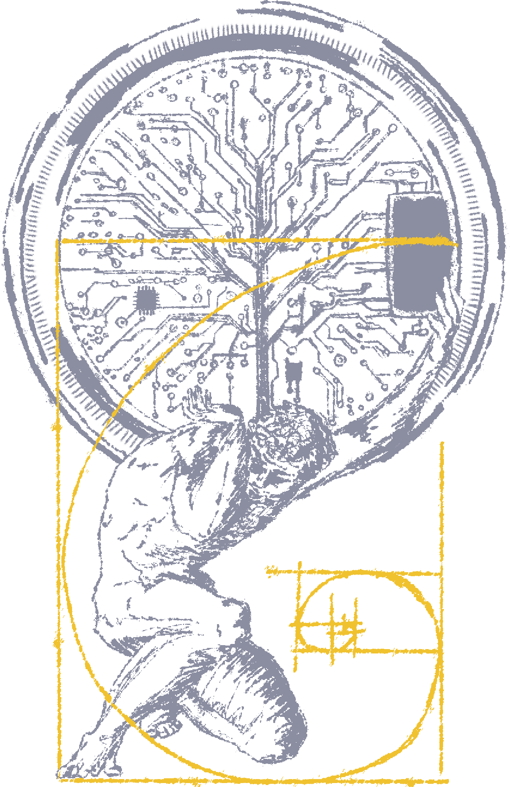
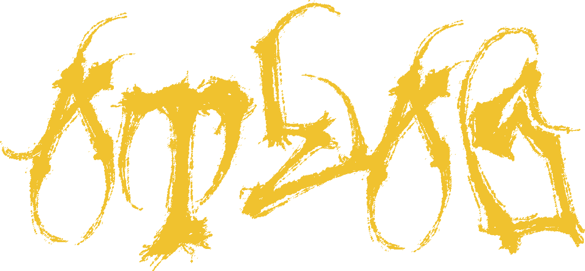
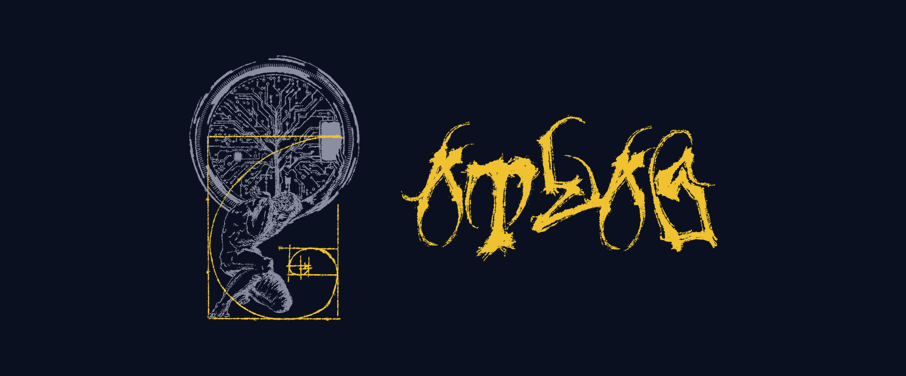

dos usuários de IA no trabalho levam as próprias ferramentas: o Shadow AI.
das empresas não veem retorno mensurável no investimento em IA generativa.
das empresas que sofreram incidente com IA não tinham controle de acesso à IA.
é o custo extra de um vazamento quando há muito Shadow AI.
Proíbe as ferramentas públicas.
Um fornecedor para todos.
Roteia e mede tokens.
Governar sem bloquear: acesso, política, custo e adoção no mesmo lugar, por empresa.
QSOFT: produto white-label, para ser revendido a vários clientes.
Dataset QSOFT de uso de IA, importado em esquema histórico separado (ADR-26).
Arquitetura Funcional e Demonstração C4 da QSOFT, traduzidas em 42 ADRs.
Engenharia de software, dados e IA, gestão ágil, segurança, UX e negócios.
No chat corporativo, com o histórico privado.
Regra determinística. A IA nunca decide acesso.
Roteamento pela política do departamento.
Credencial por referência, tentativa registrada.
Tokens, custo e latência em cada resposta.
Orçamento, adoção e AI Credits sem expor o conteúdo.
O conteúdo das conversas nunca alimenta o analytics. Só metadados.
Projeção do orçamento determinística e auditável, sem LLM (ADR-41).
Indicadores e AI Credits orientam a adoção, sem travar o acesso.
ai/tasksPR com template
Cada história nasce com o cenário de aceite. O teste é escrito a partir dele, antes da tela.
Preço por 1k tokens; modelo padrão obrigatório por área.
ModelPolicy do departamento. Sem fallback escondido.
Falha tratada e uso entregue ao observability (ADR-38).
Responde só com documentos permitidos e cita as fontes.
Adoção 30 dias, treino × uso, AI Credits, score.
Respostas do agente com fonte rastreável · provider simulado nos testes, resultado determinístico · a IA nunca decide autorização · conteúdo privado fora do analytics.
Cada módulo com api · domain · application · infrastructure. Outro módulo só enxerga a api. Mudança local, risco local.
42 ADRs e task packets curtos: quem chega ao time entende o porquê em minutos.
Liberar IA para todos com custo previsível, política aplicada e adoção medida, em vez de proibir.
+ repasse do consumo de IA com margem, ou a empresa traz a própria chave.
Agradecemos à QSOFT, aos professores orientadores e à ESPM.
